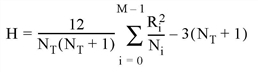

The KW_TEST function tests the hypothesis that three or more sample populations have the same mean of distribution against the hypothesis that they differ. The populations may be of equal or unequal lengths. The output is a vector containing the test statistic, H, and value indicating the probability of obtaining a value equal to or greater than H from a Chi-square distribution.
This test is an extension of the Rank Sum Test implemented in the RS_TEST function. When each sample population contains at least five observations, the H test statistic is approximated very well by a Chi-square distribution with DF degrees of freedom. The hypothesis that three of more sample populations have the same mean of distribution is rejected if two or more populations differ with statistical significance. This type of test is often referred to as the Kruskal-Wallis H-Test.
The test statistic H is defined as follows:

where Ni is the number of observations in the ith sample population, NT is the total number of observations in all sample populations, and Ri is the overall rank sum of the ith sample population.
This routine is written in the IDL language. Its source code can be found in the file kw_test.pro in the lib subdirectory of the IDL distribution.
Result = KW_TEST( X [, DF=variable] [, MISSING=nonzero_value] )
The result is a two-element vector containing the test statistic H and the one-tailed probability of obtaining a value of H or greater from a Chi-square distribution.
An integer, single-, or double-precision floating-point array of m-columns (with m ≥ 3) and n-rows. The columns of this two-dimensional array correspond to the sample populations.
If the sample populations are of unequal length, any columns of X that are shorter than the longest column must be “filled in” by appending a user-specified missing data value. This method requires the use of the MISSING keyword. See the Example section below for an example of this case.
Use this keyword to specify a named variable that will contain the number of degrees of freedom used to compute the probability of obtaining a value of H or greater from the corresponding Chi-square distribution
Set this keyword equal to a non-zero numeric value that has been appended to some columns of X to make them all a common length of n.
Test the hypothesis that three sample populations have the same mean of distribution against the hypothesis that they differ at the 0.05 significance level. Assume we have the following sample populations:
sp0 = [24.0, 16.7, 22.8, 19.8, 18.9]
sp1 = [23.2, 19.8, 18.1, 17.6, 20.2, 17.8]
sp2 = [18.2, 19.1, 17.3, 17.3, 19.7, 18.9, 18.8, 19.3]
Since the sample populations are of unequal lengths, a missing value must be appended to sp0 and sp1. In this example the missing value is -1.0 and the 3-column, 8-row input array X is defined as:
X = [[24.0, 23.2, 18.2], $
[16.7, 19.8, 19.1], $
[22.8, 18.1, 17.3], $
[19.8, 17.6, 17.3], $
[18.9, 20.2, 19.7], $
[-1.0, 17.8, 18.9], $
[-1.0, -1.0, 18.8], $
[-1.0, -1.0, 19.3]]
PRINT, KW_TEST(X, MISSING = -1)
IDL prints:
[1.65862, 0.436351]
The computed probability (0.436351) is greater than the 0.05 significance level and therefore we do not reject the hypothesis that the three sample populations sp0, sp1, and sp2 have the same mean of distribution.
|
4.0 |
Introduced |